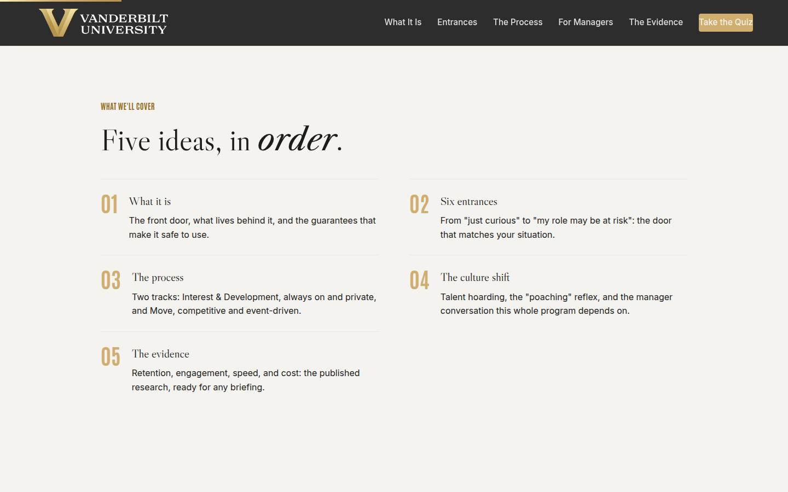
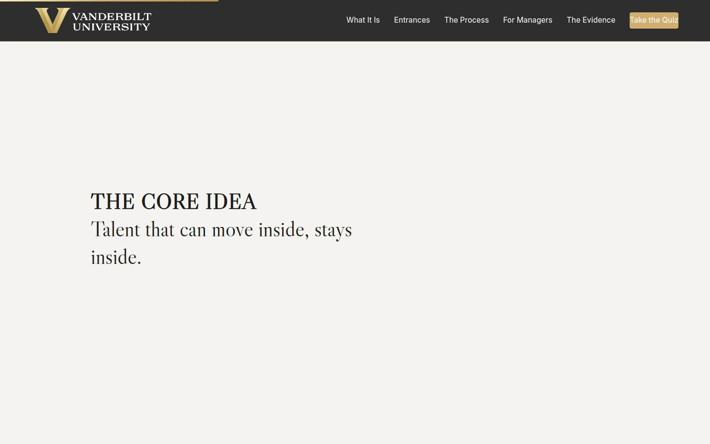
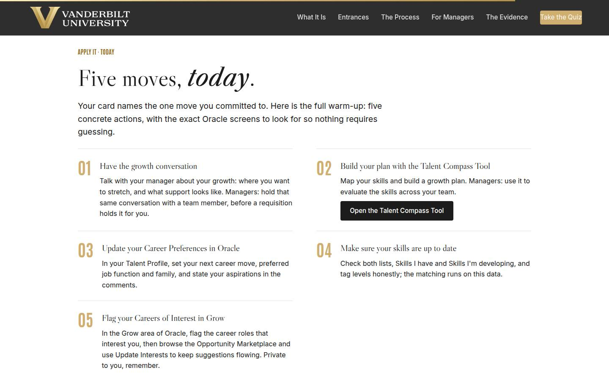
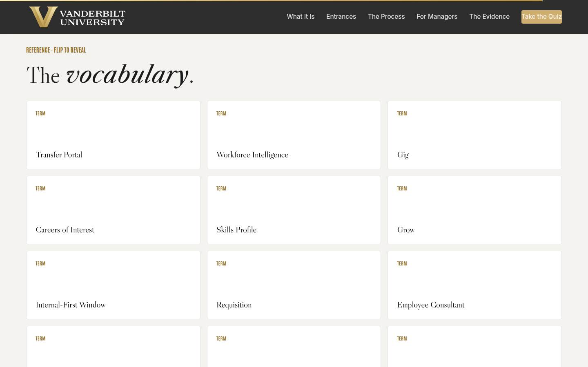

Vanderbilt · Learning Series · ATD facilitator guide · print edition
The Transfer Portal, the facilitator guide

Run of show
| Screen | Full (min) | Core (min) |
|---|---|---|
| Welcome / QR | 3 | 2 |
| Objectives | 2 | 1 |
| Agenda | 1 | — |
| 01 · What it is | 10 | 7 |
| Manifesto | 1 | — |
| 02 · Six entrances | 13 | 9 |
| 03 · The process | 12 | 9 |
| 04 · The culture shift | 16 | 11 |
| 05 · The evidence | 10 | 6 |
| Recap quiz | 5 | 5 |
| Capstone · First move card | 8 | 6 |
| Do this today | 4 | 2 |
| Glossary | 1 | — |
| Closing · commitment | 4 | 2 |
| Total | 90 | 60 |
Audience
All Vanderbilt staff and their managers: anyone who might one day want a different role at the university, and everyone who leads someone who might. Works best mixed, 10 to 30 in the room, so manager and staff perspectives can hear each other in the activities. No prerequisites. Pairs naturally with Coaching for Performance for people leaders.
Room setup
Projector plus presenter device; learners on their own devices via the Welcome-slide QR; movable seating for pairs. Virtual: breakouts of 2 for the pair activities. This session touches real career hopes: establish early that nothing typed in the course is saved or sent, and that the portal itself is private by default. If HR leadership attends, brief them beforehand that the tough questions section may surface real policy questions to take away.
Materials
- Projector or large display and the facilitator link open (this edition)
- Facilitator laptop with arrow keys or clicker; all notifications off
- Learner devices (BYOD) joining via the welcome-slide QR
- A few printed quick reference cards (cheatsheet.html) for anyone without a device
- Printed first move cards (worksheet.html) as the no-device and projector-failure fallback
- Whiteboard or flip chart for the parking lot and collected open questions for HR
- The current Transfer Portal launch timeline and support contacts from People, Culture and Belonging, so you can answer 'when' and 'who do I call'
A week before
- Read this guide end to end, then run BOTH editions start to finish, doing every exercise, including building your own first move card. You will be asked whether you have used the portal yourself; a real answer plays better than a deflection.
- Confirm the current state of the actual Transfer Portal rollout with People, Culture and Belonging: what is live, what is coming, and who staff contact for help. Write those three facts where you can reach them mid-session.
- Send the pre-work invite (template on this page) with the calendar invite: come with one honest career curiosity, held privately.
- Decide your path now: Full (90-minute slot) or Core (60). Mark your cuts from the coreNotes.
- If your audience is heavily managers, re-read Section 04 twice; it is the session's center of gravity for them, and the tough-questions bank leans that way.
The day before
- Test the projector with the facilitator link; confirm the notes rail is readable from where you'll stand.
- Scan the welcome QR from the back of the room with your own phone; it must land on the learner edition.
- Run every trainer once so no reveal surprises you, especially Judge the Response; you want the two guardrail items ready in your own words.
- Print 5 to 10 quick reference cards and first move cards.
- Re-read the tough-questions bank; say the 'so my manager can see everything I do in there?' answer out loud once.
30 minutes before
- Welcome slide up as people arrive; it does the enrolling for you.
- Close every other tab and app; silence the machine.
- Test arrow-key navigation and one interaction (run a round of Fact or Fiction).
- Arrange seating so pairs can form without furniture-moving theater; mixed manager and staff pairs are gold if the room allows.
- Write 'PARKING LOT' and 'OPEN QUESTIONS FOR HR' on the whiteboard where the room can see them.
When things go sideways
If Projector or the site fails mid-session: Teach from the printed quick reference: the guarantees, the six entrances, the two tracks, and the manager script all work on a whiteboard. The pair activities never needed a screen; the capstone moves to the printed card.
If Learner devices can't join (wifi or filters): Run facilitator-only: the trainers play well on the projector with the room voting A/B/C by hands, and the capstone moves to paper. You lose typing, not learning.
If You're 10+ minutes behind by the culture section (04): Declare the Core path silently: trainers stay, pair debriefs shrink to one voice, glossary is pointed at. Never cut Section 04's trainer, the recap, or the capstone; they carry the program's success.
If Someone shares a live, painful situation, a role elimination or a conflict with their manager: Honor it and bound it: 'That's real, and you deserve a better answer than a training room can give. Entrance E and the employee-consultant conversation exist for exactly this; let's connect after.' Follow up privately with the People, Culture and Belonging contact you prepped. Keep names off the whiteboard.
If A manager pushes back hard: 'so HR built a tool to raid my team': Don't argue; go to evidence. Ask them what it costs to backfill an external departure, then show the retention numbers and the hoarding research: the choice is between losing people to another Vanderbilt unit or to another employer. Then land the backfill cascade: their next great hire comes through the same portal.
If The room distrusts the privacy claims ('HR always says that'): Slow down and be concrete: interest declarations trigger no notifications, data reaches leaders only aggregated through Workforce Intelligence, and asking HR to work around that is itself a violation managers are trained on. Then write the residual doubts on the open-questions board and commit to written answers; skeptics convert on follow-through, not reassurance.
Tough questions, ready answers
Q: So my manager can see everything I do in there?
No. Your browsing, your Careers of Interest, and your skills profile are private to you. Your manager gets no notification when you declare interest, and leader-facing Workforce Intelligence shows aggregated, privacy-preserving data, never a list of who is looking. Your manager learns you applied for a role when you tell them or when the hiring process formally requires it, and the norm is that you have that conversation yourself once you are a serious candidate.
Q: Isn't this just poaching with extra steps?
Poaching is secret and zero-sum. This is the opposite on both counts: the marketplace is open to every unit, the releasing manager gets a planned handoff and a backfill through the same system, and the alternative to an internal move is usually an external resignation, which has no handoff and no backfill window. The research backs it: about 75% of managers admit to talent hoarding, and hoarding deters internal applications without stopping external ones (Haegele, American Economic Review, 2024).
Q: If I take a Gig and do great work, why doesn't that guarantee me the permanent role?
Because the Gig is development and the requisition is a competition, and keeping them separate protects you both ways. If Gigs converted automatically, every Gig would become a quiet audition and managers would guard them like headcount. Kept separate, you can stretch without betting your reputation, and when the real requisition opens, your Gig gives you evidence, relationships, and a warm start most candidates won't have.
Q: What if my manager retaliates anyway?
Then the program's integrity rules are on your side: blocking an application, downgrading a rating in response, or excluding someone from key work are named as serious violations, and managers are trained on that before the portal reaches them. Document what happened and bring it to your HR business partner or an employee consultant. And a candid note: the guardrails only bite because leadership enforces them, which is exactly why manager training like this session exists.
Q: Why would I tell the truth about my skill levels? Inflating them gets me matched to better roles.
It gets you matched to interviews you then lose. The hiring manager verifies skills in the interview, and an inflated profile spends your credibility exactly where you need it most. Honest levels do something better: they route you to roles and Gigs where you'll genuinely compete, and they turn the gaps into Grow goals instead of surprises.
Q: We're short-staffed already. How is my unit supposed to survive its best people leaving?
Two honest answers. First, the counterfactual: your best people already have a marketplace; it's called every other employer, and it offers no handoff, no knowledge transfer, and no internal-first backfill. The portal keeps that talent at Vanderbilt and gives you two to four weeks of coordinated transition plus first look at internal candidates for the backfill. Second, the pattern compounds: units known for developing and releasing people attract the strongest internal applicants, so the pipeline runs both directions.
Copy-paste templates
Pre-work invite (paste into the calendar invite)
Subject: Before our Transfer Portal session. One thing to bring: one honest career curiosity, a role you wonder about, a skill you never get to use, or a team member whose growth you want to support. You will never be asked to share it, and nothing you type in the session is saved or sent. Come ready to work on it privately. That's it, no reading, no assessment.
7-day pulse (send one week after)
Subject: One week later, did the first move happen? Three quick lines, reply whenever: 1) Did you make the move on your first move card? 2) What did you find in the portal? 3) What is your second move? Replies come to me only. Not yet? The card still works; this note is your nudge.
30-day re-poll (send a month after)
Subject: Thirty days with the Transfer Portal. Two questions, same scale as the room: 1) Fist to five, how confident are you now about navigating your next internal move (or supporting a team member's)? 2) Has your unit had its first real portal conversation, an application, a Gig, or a career conversation, and how did it go? Reply with a number and a line. The before-and-after pair is how we know this session did more than feel good.
After the session
Seven days out, send the pulse: 'Did you make the first move on your card? What did you find in the portal? What is your second move?' At 30 days, re-poll the fist-to-five confidence question from the close plus 'has your unit had its first Transfer Portal conversation, and how did it go?' The count of completed first moves is the program's headline Level 3 metric; for manager cohorts, also count completed career conversations.

Welcome / QR Full 3 min · Core 2
Get every learner into the experience on their own device and establish the session's load-bearing norm: this experience, like the portal itself, is private by default.
Say
“Welcome. Point your camera at that code before we start. Today is about careers, specifically yours, staying at Vanderbilt while still going somewhere new. Because that topic is personal, one ground rule: everything you type today stays on your screen. Nothing is saved or sent. And here's the preview of the whole session: the tool we're about to tour makes you the same promise.”
Do
- Have this slide projected as people arrive.
- Point at the QR and get phones up before you say anything else.
- State the privacy norm explicitly: nothing typed today is saved or sent, and the portal works the same way.
- Confirm by show of hands that most of the room has the site open before advancing.
Ask
“Quick calibration, shout it out: when you hear 'internal mobility program,' what's your honest first reaction: real opportunity, HR paperwork, or a way to get in trouble with my boss?”
Expect:
- A mix, with at least one honest 'my boss would kill me'
- Skeptical 'we've had career sites before'
- Managers half-joking about losing their best people
Respond: Welcome all three out loud: 'Perfect. The nervous ones, the skeptics, and the managers are each getting a whole section today. Keep your reaction in mind; we'll check it again at the end.'
Validate: 80%+ of the room has the deck open on a device; the room can repeat the privacy norm back to you.
Watch for: Staff sitting next to their own manager and visibly self-censoring. Name it warmly: nobody will be asked to reveal a career plan today; every personal exercise stays on their own screen.
Transition: “Here's exactly what you'll walk out able to do.”
Core path: Core: one scan prompt, the norm stated once, move on.

Objectives Full 2 min · Core 1
Set the contract: five capabilities, ending in one dated first move inside the actual portal.
Say
“Five things by the end: you'll know what the Transfer Portal is and exactly what it guarantees you. You'll know which of its six entrances fits your situation today. You'll be able to walk both tracks of the process, from private browsing to a coordinated handoff. You'll have the words for the hardest conversation in the whole program, the one where someone tells their manager. And you'll be able to make the case for internal mobility with real numbers to anyone who calls it poaching. It all lands in one artifact: a first move card with a date on it.”
Do
- Read the five objectives briskly, in plain language.
- Land on the capstone: this session ends with a REAL first move card, one direction, one move, one date.
- Name the credibility anchors once: powered by Oracle, backed by published research, built by People, Culture and Belonging.
Validate: Learners can say what the capstone will be (one dated move in the portal).
Watch for: Reading the objectives verbatim in a monotone; paraphrase like a human or lose the room by slide three.
Transition: “Five ideas, in a deliberate order.”
Core path: Core: objectives 1 and 5 out loud; the rest on screen.

Agenda Full 1 min · Core skip
Show the arc once so learners can place each piece as it arrives: the thing, the doors, the process, the culture, the proof.
Say
“The arc is simple: first the thing itself and its guarantees, then the six doors into it, then the process end to end, then the culture work, which is where programs like this live or die, and finally the evidence, so you can defend it in any meeting.”
Do
- Walk the five items in one breath each.
- Point out the shape: what it is (01), how you enter (02), how it works (03), what makes it succeed (04), and why it's worth it (05).
Validate: None needed; this is orientation.
Watch for: Don't teach here; every concept has its own slide.
Transition: “Start with what it actually is, because most of the fear about it comes from what it isn't.”
Core path: Core: skip entirely; the deck's structure carries it.

01 · What it is Full 10 min · Core 7
Install an accurate mental model of the Transfer Portal (one front door, Oracle-powered, Workforce Intelligence on the leader side) and dissolve the folklore with the fact-or-fiction trainer.
Say
“The Transfer Portal is one front door for internal career movement, powered by Oracle. Behind it: every eligible open role, posted internally for two weeks before the outside world sees it. Your skills profile. Careers of Interest you declare privately. Grow, for development planning. And Gigs, short-term stretch assignments in other units. On the other side of the wall, leaders see Workforce Intelligence: the same data, but aggregated and privacy-preserving, for planning the workforce rather than watching you. Now, the important part is what it is NOT, and that's a game.”
Do
- Walk the lead: everything career-related in one place, and name each piece (requisitions, Careers of Interest, skills, Grow, Gigs, succession, performance history).
- Explain Workforce Intelligence in one line: same data, aggregated and privacy-preserving, for planning rather than surveillance.
- Walk the three guarantee cards: what you control, what HR guarantees, what managers commit to.
- Run Fact or Fiction on devices, or as a room vote on the projector; call for votes out loud before each reveal.
- Run the pair activity from Go deeper: name your worry, check it against the guarantees, collect the genuinely open ones on the whiteboard for HR.
Ask
“Which of the guarantees on this slide would change your actual behavior if you fully believed it?”
Expect:
- 'No notification to my manager' wins most rooms
- The two-week internal window, especially from frequent external applicants
- Managers name the backfill partnership
Respond: Anchor the winner: 'Notice what you just told each other: the barrier was never the software. It was who might find out. Hold that thought; Section 04 is about exactly that.'
Debrief: Private by default, competitive by design, advisory only when you ask. Every fear the trainer just tested traces back to one of those three, and all three are guarantees, not aspirations.
Validate: 4+ of 5 on the trainer for most of the room; the open-questions board has real questions on it (an empty board means people are being polite, so ask again).
Watch for: The room treating the privacy guarantees as marketing. Don't oversell; point at the concrete mechanics (no notifications, aggregate-only rollup) and put the rest on the open-questions board with a promise of written answers.
Transition: “So that's the building. Now, which door do you personally walk in through? There are six, and one of them is yours. First, the whole program in eight words.”
Core path: Core: cards fast, trainer stays on devices, the worry activity becomes a 60-second silent write and a show of hands for 'covered or open.'

Manifesto Full 1 min · Core skip
One beat of stillness to lock the session's core idea before the entrances arrive.
Say
“Talent that can move inside, stays inside.”
Do
- Let the line animate word by word. Say nothing until it finishes.
- Read it once, slowly, then advance.
Validate: None; this is pacing.
Watch for: The urge to talk over it. Don't.
Transition: “Everything today unpacks that sentence. Here are the six doors.”
Core path: Core: skip; say the line yourself as you pass it.

02 · Six entrances Full 13 min · Core 9
Make the portal personal: every learner identifies the entrance that matches their situation today and can route other real situations to the right door.
Say
“People arrive at a career question from six different places, so the portal has six doors. The Explorer is curious with no urgency: Careers of Interest, declared privately. The tenured high performer needs a stretch: Gigs, real work in another unit while keeping the home role. The underutilized contributor grew past the job description: tag the real skills and let the portal do the matching. The post-reorg realigner's world just shifted: a confidential advisory conversation, then competitive applications. The at-risk employee gets the program at its most protective: priority matching and expedited review. And the direct applicant already knows the posting: straight to the requisition, inside the two-week window. One of these is you, today. It may be a different one next year, and that's the design working.”
Do
- Walk the six cards briskly, one breath of persona and one of mechanics each. A is curiosity, B is the plateaued high performer, C is hidden skills, D is post-reorg, E is at risk, F is the direct applicant.
- Give entrances D and E an extra beat: advisory is confidential, initiated by the employee, and E adds priority matching and expedited review.
- Send them to Pick the Entrance: five colleagues, route each to a door.
- Run the group activity: private pick, show of hands A through F, then pairs share their entrance and first click.
- Note the spread out loud; every room has all six, and that's the point of six doors.
Ask
“Show of hands, A through F: which entrance is yours today?”
Expect:
- A heavy cluster on A and C in general audiences
- Managers surprised at how many hands are up at all
- A few honest B hands from long-tenured staff, often with laughter
Respond: Count the spread out loud and land it: 'Look around. That many colleagues are already thinking about their next chapter here. The portal didn't create that; it gives it somewhere safe to go. Managers, remember this vote in two sections.'
Debrief: Six situations, six doors, zero assignments. The pick you just made privately is the seed of your first move card at the end.
Validate: 4+ of 5 on the trainer; every learner has privately picked an entrance (it feeds the capstone).
Watch for: People treating the personas as boxes ('I'm a B forever'). Say it directly: entrances are situations, most careers use two or three of them, and you can change lanes any time. Also protect anyone who picked E; nobody should have to reveal that pick in the pair share.
Transition: “You've picked a door. Here's what happens after you walk through it, in two tracks.”
Core path: Core: cards in three breaths, trainer on devices, hands-up spread stays (it's fast and it lands), pair share drops.

03 · The process Full 12 min · Core 9
Install the two-track model (Interest & Development always on and private; Move competitive and event-driven) and make every step predictable through the trainer, including disclosure timing.
Say
“Everything in the portal runs on one of two tracks. Track one is Interest and Development: always on, private, no clock. You build a profile, set a Grow plan, browse, maybe take a Gig, maybe talk to an advisor. Nothing on this track notifies anyone or commits you to anything. Track two is Move, and it starts when a requisition posts: internal staff get it for two weeks before the outside world. You apply, sharing what you choose. You interview in the same process anyone would. If you win it, HR and both managers coordinate a handoff, usually two to four weeks, and your old role posts to the same portal you just used. One more thing, because everyone wonders and nobody asks: you do NOT owe your manager an announcement when you start exploring. You DO owe them a professional conversation once you're a serious candidate, and you get to choose that moment.”
Do
- Walk Track 1's five steps: profile, Grow plan, explore, optional Gig, optional advisory. Stress: always on, private, unhurried.
- Walk Track 2's six steps: requisition posts internally first, you apply sharing what you choose, one consistent interview process, coordinated two-to-four-week handoff, fast onboarding, and the backfill through the same portal.
- Send them to Call the Next Move: five moments, call what the process does.
- Debrief the disclosure question from Go deeper: no announcement needed to explore; a professional conversation once you're a serious candidate.
- Run the pair trace: invent a colleague, walk both tracks, find where it would wobble.
Ask
“Where in these two tracks would a real move at Vanderbilt most likely wobble, and who's responsible for catching it?”
Expect:
- The handoff: the old team's workload during transition
- The disclosure conversation going badly
- Managers ask who pays for overlap or backfill gaps
Respond: Sort the answers into the structure: the handoff has an owner (HR plus both managers, on a timeline), the disclosure conversation is the next section entirely, and the resourcing questions go on the open-questions board for People, Culture and Belonging with a promised written answer.
Debrief: Private until you act, competitive when you do, coordinated when you win. If you can say those three phrases, you can walk both tracks.
Validate: 4+ of 5 on the trainer; pairs can name where a move would wobble and who fixes it (usually the handoff, fixed by HR plus both managers).
Watch for: The 'guaranteed job' misread and its mirror, 'so applying is pointless.' The correction is the same sentence both times: the window guarantees you first look, and the interview is still yours to win. Also watch for Gig-equals-tryout creeping back; the trainer addresses it, but repeat it if you hear it in the pairs.
Transition: “Everything so far works on paper. Whether it works at Vanderbilt comes down to one conversation, and one word managers keep using about it.”
Core path: Core: tracks in two breaths each, trainer on devices, disclosure norm stated plainly by you, pair trace drops.

04 · The culture shift Full 16 min · Core 11
The session's center of gravity: name talent hoarding as a measured, incentive-driven pattern, install the mobility-is-development reframe, and drill the manager response the whole program depends on.
Say
“Here's the sentence some managers are already thinking: 'this is poaching.' Let's take it seriously, because it isn't irrational. Researchers got personnel records from a major firm and measured what managers actually do: about three quarters admit to talent hoarding, holding onto their best people instead of releasing them to grow. It's worst exactly where good management is rewarded: team performance incentives, big teams, visible stars. And it works, in the worst way: hoarding measurably deters people from applying internally. It does nothing to stop them applying externally. So the real choice was never 'keep them or lose them.' It's 'lose them to the third floor, with a handoff and a backfill, or lose them to another employer with two weeks' notice.' When a team member grows into a new role at Vanderbilt, that is a win on your leadership record. And there's one moment where that either becomes true or dies: the moment they tell you they've applied.”
Do
- Land the research first and slowly: about 75% of managers self-report hoarding, it's worst under team-performance incentives with large teams and visible talent, and it deters internal applications (Haegele, AER 2024).
- Say the implication plainly: unmanaged, the average manager suppresses exactly the behavior the portal needs. Nobody has to be a villain for the program to fail.
- Walk the reframe card: an internal move is retention we'd have lost, skills recombining, and a backfill opportunity, all three at once.
- Read both script cards aloud, the culture-building response and the killer, and let the second one sit in silence for a beat.
- Walk the guardrails: no retaliation, no surveillance, do coach. Name them as integrity rules with teeth, not suggestions.
- Send them to Judge the Response: five manager replies, call each one.
- Run the drafting activity: managers draft their two sentences, staff draft their disclosure opener, pairs exchange, volunteers read to the room.
- In the debrief, mention the structural counterweights from Go deeper: Kotter-style rollout, champion managers, first mover stories, release rate on scorecards.
Ask
“Managers, honestly: what makes the generous response hard in the actual moment, even when you believe in it?”
Expect:
- The immediate coverage problem: who does the work
- It genuinely feels personal after years of investment
- Fear of a cascade: one leaves and three follow
Respond: Honor all three, then sort them: coverage has structure behind it (the handoff timeline and internal-first backfill). The personal sting is real, and it's exactly what the reframe retrains. The cascade fear inverts under the research: units that develop and release people attract internal talent; units that trap them create the exodus they feared.
Debrief: Hoarding is incentives, so the fix is structure plus one practiced sentence: thank you for telling me. The guardrails hold the floor, the reframe raises the ceiling, and the backfill cascade pays the bill.
Validate: 4+ of 5 on the trainer; the room can distinguish hoarding (guilt, stalling) from guardrail violations (blocking, retaliation); every manager leaves with two drafted sentences.
Watch for: Two failure modes: manager shame (the research says incentives, so keep it structural and blame-free) and staff glee (the point is partnership, so pull it back to the backfill cascade: today's releasing manager is next month's hiring manager). If a real manager-staff pair sits together, don't force them to exchange drafts; let them choose.
Transition: “You now have the words. For the meeting where you'll need ammunition instead, here are the numbers.”
Core path: Core: research and reframe in three minutes, both script cards read aloud, trainer stays in full (it IS the section), drafting shrinks to a solo two-minute write with one volunteer read-out.

05 · The evidence Full 10 min · Core 6
Arm every learner with cited, linked research they can quote: retention, tenure, engagement, speed, cost, and the hoarding warning that makes the culture work non-optional.
Say
“Everything until now was mechanics and culture. This section is ammunition. Employees promoted within three years of hire: seventy percent chance of staying. Never moved: forty-five. High-mobility organizations keep people five point four years against two point nine. Internal hires reach full speed twenty to twenty-five percent faster, and external hiring can cost three to five times more all-in. Cornell found internal hires flat outperform external ones. Every one of those claims is linked on this slide to its source, so you can hand it to the most skeptical person you know. But start with the game; I want your instincts on record first.”
Do
- Frame the section: built to be borrowed, every claim linked to its source.
- Run Guess the Number: five findings, call each before the reveal. Room votes work as well as devices here.
- Walk the six stat tiles briskly, one line each, pointing at the linked sources.
- Run the quick check: why these outcomes aren't automatic (the hoarding finding).
- Run the sixty-second pitch drill from Go deeper: skeptical department head, two cited numbers, swap.
Ask
“After the pitch drill: which single number moved your skeptic most, and why that one?”
Expect:
- The 3-to-5x cost figure, especially with budget owners
- 70 versus 45 retention, the cleanest story
- The 75% hoarding stat, because it explains lived experience
Respond: Point out the pattern in their answers: cost moves finance brains, retention moves operators, and the hoarding number moves anyone who has watched a great colleague leave. Matching the number to the listener IS the skill; they just practiced it.
Debrief: Six converging bodies of research, one direction. And the warning label: none of it happens automatically, because hoarding is the default. That's why Section 04 was the long one.
Validate: 4+ of 5 on the trainer; in the debrief, learners can quote at least two numbers with their source without looking.
Watch for: A methodology skeptic litigating one study. Don't defend a single number; the case is convergence: retention, tenure, engagement, speed, cost, and quality all point one direction across independent sources. Park deep methodology questions with a promise to send the links.
Transition: “That's the whole case. Six questions to check it's loaded, then the card that turns it into a move.”
Core path: Core: trainer as a fast room vote, tiles in one sweep, quick check stays, pitch drill becomes one volunteer pitching the room for sixty seconds.

Recap quiz Full 5 min · Core 5
Score the session's knowledge against the five objectives before the capstone applies it (Kirkpatrick Level 2).
Say
“Six questions, one per big idea. This is the systems check before you write the card that leaves the room with you.”
Do
- Everyone takes it on their own device, all six questions.
- Ask for hands on 5-or-better; celebrate briefly.
- For any question the room visibly missed, do a 30-second reteach from the relevant slide, not a lecture.
Validate: Room mode at 5/6 or better. The quiz maps onto the objectives, so misses tell you exactly what to reteach.
Watch for: Racing. Frame it as a check before the commitment, not a race.
Transition: “Now the only part of today that changes anything.”
Core path: Core: keep at full length; this is the objectives' evidence.

Capstone · First move card Full 8 min · Core 6
Convert the session into one dated action inside the actual portal: a direction, a first move, a named failure mode, and a date. The transfer artifact and the Level 3 seed.
Say
“A portal nobody opens changes nothing, so here's the deal we're closing: name the direction you're honestly curious about, a role family, a skill, a unit, or if you lead people, a team member's growth. Pick your one first move: the profile and a Career of Interest, a saved Gig, a requisition search, an advisory request, or the career conversation with your team member. Then the honest field: the thing you will NOT do, because you know your own failure mode, whether that's waiting to be discovered or, for managers, slow-walking someone's move. And a date. A named move with a date happens. 'I should look into that sometime' never does.”
Do
- Frame it: a portal nobody opens changes nothing. One direction, one move, one date.
- Repeat the privacy norm before anyone types: nothing here is saved or sent.
- Give quiet time; this is individual work. Circulate for stuck learners: the entrance they picked in Section 02 is the raw material.
- Point managers at their own versions of the chips: the career conversation move and the hoarding failure mode.
- Point at field 3, what you will NOT do, as the honest field: the failure mode is half the commitment.
- Push the build moment, then the close-the-loop line: after the move, write one line about what you found; that line decides move two.
Ask
“What's most likely to make you skip your first move, and what's your plan for that obstacle?”
Expect:
- The week will swallow it; no urgency
- Nervousness that exploring will be seen as disloyalty
- Managers: the career conversation feels like inviting people to leave
Respond: The busy week: 'that's why the date field exists; calendar it before you stand up.' The disloyalty fear: 'exploring is invisible by design; that was Section 01's whole point.' The manager fear: 'the research says the opposite: people who can talk about their future with you stay longer. Silence is what sends them to the external market.'
Debrief: One field of the university is about to get a more honest version of your career data, and one move is on your calendar. That's how a marketplace starts: one profile at a time.
Validate: Every learner builds a card (all four fields). The card plus the 7-day pulse plus the 30-day re-poll is the evidence chain.
Watch for: Vague directions ('something better') get pushed to one role family, skill, or unit. Staff picking the manager chips or vice versa: gently reroute to the chair they actually sit in. And anyone racing through it: a card without honesty in field 3 is a poster.
Transition: “Your card has one move on it. The next page turns it into a checklist with pictures.”
Core path: Core: protect the individual work; trim your framing to one minute. Never cut the capstone.

Do this today Full 4 min · Core 2
Convert the capstone's single move into a concrete five-action warm-up, anchored to the real Oracle screens and the Talent Compass Tool, so nobody leaves unsure where to click.
Say
“Your card names one move. Here's the full warm-up, five actions, and none of them need guesswork. One: the growth conversation, with your manager or, if you lead people, with a team member. Two: the Talent Compass Tool, linked right on this page, to build your plan or map your team's skills. Three: Career Preferences in your Oracle Talent Profile, and that screenshot is the exact screen. Four: both skills lists, up to date and honest. Five: flag your Careers of Interest in the Grow area and browse the Opportunity Marketplace. Every screenshot stays in this course, so you can come back and match your screen to the picture.”
Do
- Walk the five actions in order, pointing at each Oracle screenshot as you go: the growth conversation, the Talent Compass plan, Career Preferences, the two skills lists, and Careers of Interest in Grow plus the Opportunity Marketplace.
- Open the Talent Compass Tool live if time allows; thirty seconds of the real screen beats a minute of description.
- Tell managers explicitly which versions are theirs: the growth conversation with a team member, and the Talent Compass as a team skills evaluation.
- Point out that the screenshots stay in the course, so nobody needs to memorize the navigation now.
Ask
“Which of the five will you do first, and which one have you been avoiding?”
Expect:
- Skills updates named as first, the easy win
- The growth conversation named as the avoided one, by both staff and managers
- Someone asks whether the Talent Compass replaces the Oracle profile (it doesn't; it feeds it)
Respond: Land the pattern: 'The easy wins are how you warm up; the avoided one is where the growth is. And no, the Talent Compass doesn't replace Oracle; use it to figure out what's true, then put what's true into your profile.'
Debrief: Five actions, every screen pictured, one tool linked. The distance between this session and the real portal is now zero clicks of mystery.
Validate: Ask for a show of hands: 'who can name which Oracle screen holds Career Preferences?' The answer is the Talent Profile; if hands are thin, point at the screenshot once more.
Watch for: The room treating this as homework to forget. Tie each action back to the card they just built: action three, four, or five IS most people's committed first move, so today's list is a head start, never extra credit.
Transition: “Reference shelf in one breath, and then the send-off.”
Core path: Core: walk the five actions in one pass with the screenshots on screen; skip the live tool demo.

Glossary Full 1 min · Core skip
Signpost the reference layer; it lives here for after the session.
Say
“Every term from today lives here as flip cards, including the one to keep handy for your next leadership meeting: talent hoarding, with the number attached.”
Do
- Flip one card on the projector (Talent Hoarding is a good pick; it reteaches Section 04 in one line).
- Tell them it's all here whenever they need the vocabulary back.
Validate: None; reference material.
Watch for: Don't tour all twelve cards; one flip makes the point.
Transition: “Last slide. One move left.”
Core path: Core: skip; point at it verbally from the closing slide.

Closing · commitment Full 4 min · Core 2
Convert cards into spoken commitments, capture the Level 1 reaction check, and point at the follow-up chain.
Say
“The whole session in one breath: the portal is private by default and competitive by design. Six doors, and one of them is yours. Two tracks: explore quietly, compete openly, hand off respectfully. The culture turns on one sentence: thank you for telling me. And the research is unanimous enough to say out loud in any meeting: talent that can move inside, stays inside. You have a card. Before you go: your move, and your day. Say it out loud; spoken commitments stick.”
Do
- Read the featured card: the one next step is the first move from their card, in the actual portal, within 7 days.
- Run the fist-to-five (Level 1): 'On a fist to five, how confident are you about making your move?' Scan and note the number for your session log; the 30-day re-poll asks it again.
- Run the commitment round, popcorn style: move and day, out loud or in chat.
- Point at the quick reference and first move card buttons.
- Tell them the 7-day pulse is coming, close the open-questions loop ('written answers to that board within a week'), then land the last line and stop on time.
Ask
“Around the room, one line each: your move, and your day.”
Expect:
- 'Profile and a Career of Interest, tomorrow'
- 'Requisition search in research admin, Thursday'
- A manager commits to a career conversation by Friday
Respond: Thank each one, no commentary. For the manager commitments, one warm addition: 'Your team member will remember that conversation longer than you will. That's the program launching, right there.'
Debrief: The session's success metric isn't in this room; it's the 7-day pulse: how many first moves actually ran, and what people found on the other side of the door.
Validate: Fist-to-five mostly 3+ (Level 1); a majority state a move-and-day out loud or in chat. Count both; with the pulse and the 30-day re-poll, that's your evidence chain.
Watch for: Cards that quietly skipped the date. The commitment round catches them: no day, no commitment; help them pick one on the spot.
Transition: “Go make the move. And when you find something interesting in there, tell a colleague where the door is. Marketplaces run on word of mouth.”
Core path: Core: fist-to-five plus a fast commitment round; the ending survives every cut.
Generated from facilitator/notes.json. The on-screen facilitator edition lives at ./ alongside this guide.